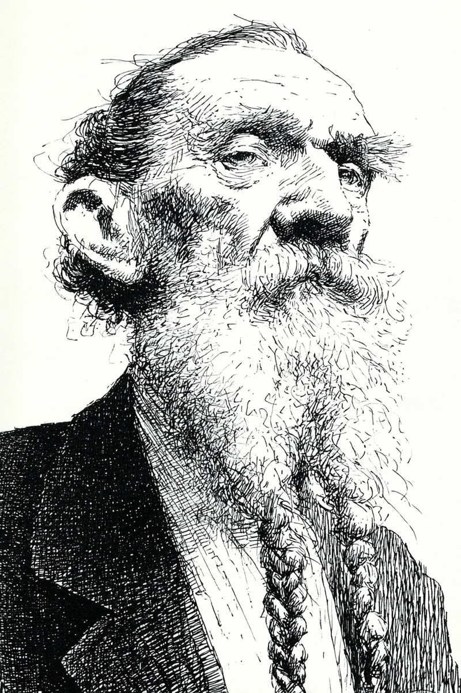

“필석 씨, 그거 뭐예요?”
[”Pilseok, what is that?”]
“뭐가요?”
[”What?”]
“그거요. 턱에 있는 거요.”
[”That. The thing on your chin.”]
“아, 이거요? 수염이에요.”
[”Oh, this? It’s a beard.”]
“수염인 건 알아요. 근데 왜 땋았어요?”
[”I know it’s a beard. But why did you braid it?”]
“예쁘잖아요.”
[”Because it’s pretty.”]
“예쁘다고요?”
[”Pretty?”]
“네. 예뻐요. 유진 씨는 눈이 없어요?”
[”Yes. It’s pretty. Do you not have eyes, Yujin?”]
“눈은 있어요. 두 개나 있어요. 근데 그 수염은 안 예뻐요.”
[”I have eyes. Two of them. But that beard is not pretty.”]
“유진 씨, 이 수염을 만드는 데 삼 년이 걸렸어요.”
[”Yujin, it took three years to make this beard.”]
“삼 년이요?”
[”Three years?”]
“네. 삼 년이요. 매일 아침 감고, 말리고, 빗고, 기름 바르고, 땋았어요.”
[”Yes. Three years. Every morning I washed it, dried it, combed it, oiled it, and braided it.”]
“매일이요?”
[”Every day?”]
“매일이요.”
[”Every day.”]
“비가 와도요?”
[”Even when it rained?”]
“비가 와도요.”
[”Even when it rained.”]
“눈이 와도요?”
[”Even when it snowed?”]
“눈이 와도요.”
[”Even when it snowed.”]
“아플 때도요?”
[”Even when you were sick?”]
“아플 때도요. 한번은 열이 사십 도였는데, 침대에서 수염을 땋았어요.”
[”Even when I was sick. Once my fever was forty degrees, and I braided my beard in bed.”]
“필석 씨, 왜요? 도대체 왜요?”
[”Pilseok, why? Why on earth?”]
“이유가 있어요.”
[”There’s a reason.”]
“이유요? 무슨 이유요?”
[”A reason? What reason?”]
“비밀이에요.”
[”It’s a secret.”]
“비밀이요?”
[”A secret?”]
“네.”
[”Yes.”]
“저한테도 비밀이에요?”
[”It’s a secret from me too?”]
“네. 유진 씨한테도 비밀이에요.”
[”Yes. It’s a secret from you too.”]
“우리 이십 년 넘게 이웃인데요?”
[”We’ve been neighbors for over twenty years though?”]
“이십 년이 뭐예요. 이 비밀은 오십 년짜리예요.”
[”What’s twenty years. This secret is a fifty-year secret.”]
“오십 년이요? 필석 씨, 저 지금 너무 궁금해요.”
[”Fifty years? Pilseok, I’m so curious right now.”]
“궁금하면 안 돼요.”
[”You shouldn’t be curious.”]
“이미 궁금해요!”
[”I’m already curious!”]
“그럼 어쩔 수 없네요.”
[”Then there’s nothing I can do.”]
“그러니까 말해 주세요!”
[”So please tell me!”]
“싫어요.”
[”No.”]
“커피 사 줄게요.”
[”I’ll buy you coffee.”]
“싫어요.”
[”No.”]
“삼겹살 사 줄게요.”
[”I’ll buy you pork belly.”]
“싫어요.”
[”No.”]
“삼겹살이랑 소주 사 줄게요.”
[”I’ll buy you pork belly AND soju.”]
“음...”
[”Hmm...”]
“삼겹살, 소주, 그리고 된장찌개까지요.”
[”Pork belly, soju, and doenjang jjigae too.”]
“유진 씨.”
[”Yujin.”]
“네?”
[”Yes?”]
“가까이 오세요.”
[”Come closer.”]
“네, 네.”
[”Okay, okay.”]
“더 가까이요.”
[”Closer.”]
“이 정도요?”
[”This close?”]
“조금 더요.”
[”A little more.”]
“필석 씨, 지금 코가 거의 닿아요.”
[”Pilseok, our noses are almost touching now.”]
“잘 들으세요.”
[”Listen carefully.”]
“듣고 있어요!”
[”I’m listening!”]
“이 수염 안에...”
[”Inside this beard...”]
“네?”
[”Yes?”]
“이 수염 안에 말이에요...”
[”Inside this beard, you see...”]
“네, 네! 수염 안에 뭐가 있어요?”
[”Yes, yes! What’s inside the beard?”]
“사탕이 있어요.”
[”There’s candy.”]
“...”
“유진 씨?”
[”Yujin?”]
“지금 뭐라고 했어요?”
[”What did you just say?”]
“사탕이 있다고 했어요.”
[”I said there’s candy.”]
“수염 안에 사탕이 있다고요?”
[”There’s candy inside your beard?”]
“네. 여기 보세요.”
[”Yes. Look here.”]
“어디요?”
[”Where?”]
“여기요. 이 부분이요. 손가락을 넣어 보세요.”
[”Here. This part. Try putting your finger in.”]
“정말이요? 아, 진짜다! 사탕이에요! 딸기맛이에요?”
[”Really? Oh, it’s real! It’s candy! Is it strawberry flavored?”]
“네. 포도맛도 있어요.”
[”Yes. There’s grape flavor too.”]
“몇 개나 있어요?”
[”How many are there?”]
“보통 다섯 개에서 일곱 개 정도요.”
[”Usually about five to seven.”]
“왜요? 왜 수염에 사탕을 넣어요?”
[”Why? Why do you put candy in your beard?”]
“유진 씨, 생각해 보세요. 길을 걷다가 갑자기 사탕이 먹고 싶으면 어떻게 해요?”
[”Yujin, think about it. If you’re walking down the street and suddenly want candy, what do you do?”]
“가게에 가요.”
[”I go to a store.”]
“저는 수염에서 꺼내요.”
[”I take one out of my beard.”]
“...”
“편하죠?”
[”Convenient, right?”]
“필석 씨.”
[”Pilseok.”]
“네?”
[”Yes?”]
“삼 년 동안, 매일 아침, 비가 와도, 눈이 와도, 열이 사십 도여도, 수염을 관리한 이유가 사탕 때문이에요?”
[”For three years, every morning, even when it rained, even when it snowed, even when your fever was forty degrees, the reason you took care of your beard was because of candy?”]
“네.”
[”Yes.”]
“주머니가 있잖아요!”
[”You have pockets!”]
“주머니에 넣으면 녹아요.”
[”If I put them in my pockets, they melt.”]
“가방이 있잖아요!”
[”You have a bag!”]
“가방은 무거워요.”
[”A bag is heavy.”]
“그냥 사탕을 안 먹으면 되잖아요!”
[”You could just not eat candy!”]
“유진 씨, 그건 너무 슬픈 말이에요.”
[”Yujin, that’s a very sad thing to say.”]
“하나 주세요.”
[”Give me one.”]
“맛있죠?”
[”It’s good, right?”]
“맛있어요. 근데 수염 냄새가 나요.”
[”It’s good. But it smells like beard.”]
“그게 특별한 맛이에요.”
[”That’s the special flavor.”]
“내일도 하나 주세요.”
[”Give me one tomorrow too.”]
“매일 올 거예요?”
[”Are you going to come every day?”]
“매일 갈게요.”
[”I’ll come every day.”]
“그래서 이 수염이 필요한 거예요.”
[”That’s why I need this beard.”]